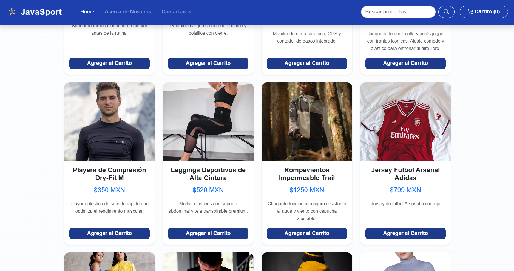
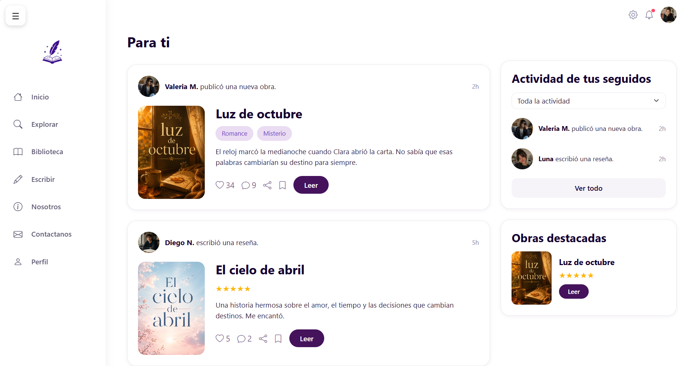

Katja.js
Aspiring Front-End Developer
⭐ Building creative and meaningful digital experiences through code ⭐
About me
My professional background is in customer service and operations management, where I developed leadership, communication, and problem-solving skills while working with performance metrics and continuous improvement initiatives. Today, I am transitioning into Front-End Development, driven by a passion for technology, user experience, and product design. I am excited to combine my understanding of people with my growing technical skills to create intuitive and engaging digital products.
Contact
Projects
JavaSport - Online Sportswear Store
A landing page for an online sportswear store, created during a hackathon in less than 24 hours. The project focused on presenting products, brand identity, and a clear shopping experience.

Caliope - Reader & Writer Platform
A collaborative reading and writing platform prototype focused on stories, reviews, and immersive reading experiences.

Certifications
HTML
Codédex
Completed in 2026
View CertificateCSS
Codédex
Completed in 2026
View CertificateSkills & Tools
Technologies
- HTML5
- CSS3
- Bootstrap
Tools
- VS Code
- IntelliJ IDEA
- Git & GitHub
- Figma
Currently learning
- JavaScript
- Responsive Design
- UX/UI Fundamentals